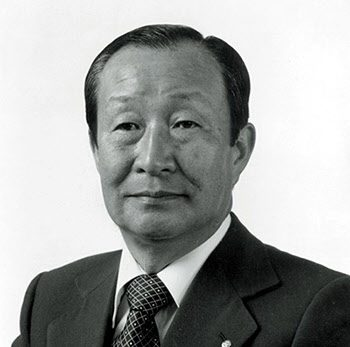
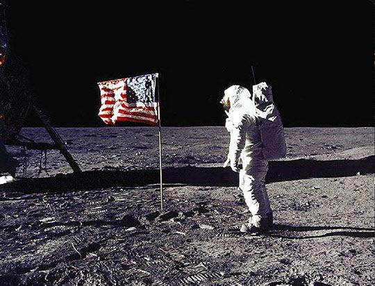
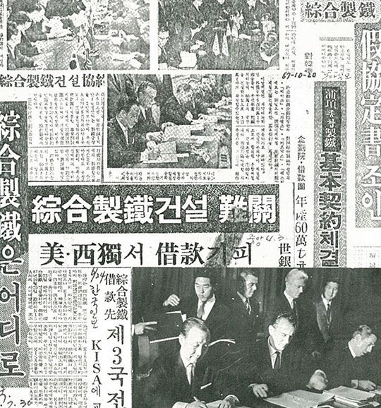
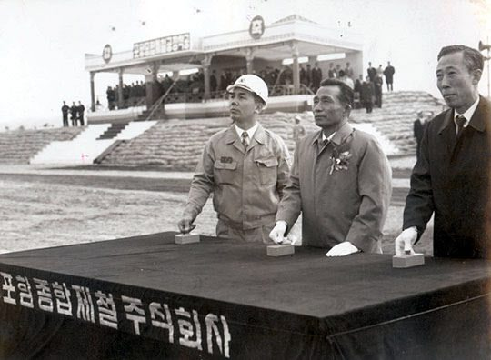

연재일 2014-12-16출처 조선일보 프리미엄조선 연재
1969년 4월의 IECOK 파리 총회가 포항종합제철 건설 차관 제공에 대해 ‘불가’를 결정한 이유는 두 가지였다. 첫째는 경제성이 결여되었다, 둘째는 한국의 외채 증가로 상환 능력이 없다.
박태준은 첫째 이유에 분개했다. 그들은 인도의 종합제철소 건설이 실패로 돌아갔으니 개발도상국의 그것을 위한 지원은 금물인 데다가 한국은 연산 60만 톤이니 너무 작아서 경제성이 없다는 것이었다. 인도 사례를 보라? 이것은 민족적 자존심 문제였다. 60만 톤이 너무 작다? 이것은 국가적 자존심 문제였다. 1962년 처음에 30만 톤, 1966년 50만 톤, 이어서 60만 톤.
이렇게 선진국의 월산(月産)에도 못 미치는 수치를 연산으로 잡은 것은 순전히 건설비(차관) 조달 능력이 없어서 첫 밑천을 적게 잡으려는 빈곤의 소치였다. 이미 1965년에 니시야마 가와사키제철 사장이 방한하여 박태준에게 ‘100만 톤 임해 제철소’로 시작하라는 충고를 했고 그것을 그가 그대로 박정희에게 보고를 했다(연재 25회). 박정희와 박태준이 몰라서 100만 톤을 주저한 것이 아니었다.
우리의 차관조달 능력을 감안한 결정이었다. 작게 시작하여 연차적으로 크게 가자는 장기적인 기획이었던 것이다.
박정희와 박태준이 IECOK 총회에 큰 기대를 건 것은 아니었다. 마지막으로 한 번 더, 이 심정이었다. 경제기획원 차관보 정문도 일행이 그에 앞서 3월 10일부터 4월 15일까지 포이의 개별교섭 권유에 따라 KISA 5개국을 차례로 순방했으나 내놓을 성과를 거두지 못했기 때문이다.
IECOK에 참석했다가 빈손으로 서울에 돌아온 박충훈(경제기획원 부총리)이 김포공항에 내려 기자들에게 종합제철 차관 도입에 대한 비관적 전망을 알리고 종합제철의 사업규모와 건설시기를 재검토하여 결정하겠다고 발표했다. 이 발언에 박정희는 심기가 몹시 불편했다.

박충훈에게 박정희가 따끔하게 질책했다는 보도가 나왔으나, 포항시내엔 ‘종철이 공장 말뚝도 박기 전에 망했다’라는, 사실에 가까운 유언비어가 퍼지고 포철 직원들은 의기소침해져서 자기 미래와 회사 미래를 불안해했다. 그러나 박태준은 밝힐 수 없는 비장의 카드를 가슴에 품고서 언론이 뭐라든 관료가 뭐라든 포철은 반드시 성공하게 된다고 피력했다.
이때 세계은행이 한국에 약을 올렸다. 브라질의 이파팅가 우지미나스제철소 건설에 차관을 제공한다고 결정한 것이었다. 불난 집에 부채질 하듯 4월 29일엔 미국수출입은행이 한국의 종합제철소 건설은 경제적 타당성에서 의문이 제기된 상태이므로 차관을 제공할 수 없다는 최종 입장을 밝혔다. 이렇게 세계적 금융기관이 한국 종합제철에 돈을 댔다가 떼일 염려에 빠진 즈음, 세계인의 시선은 허공의 달에 집중되었다. 유인우주선 아폴로 10호가 달 표면에 다가서고 있었던 것이다. 미국과 한국의 까마득한 격차를 깨우쳐주는 빅 뉴스였다.

5월 2일 박정희가 청와대로 박태준, 박충훈, 김정렴(상공부장관), 이한림(건설부장관)을 불러 모았다. 이 자리에서 세 가지 방침이 결정됐다. 첫째, 세계은행에만 의지하지 말고 자체 검토를 강화해 차관제공을 설득할 입증자료를 제시할 것. 둘째, 포철의 항만 도로 부지공사는 계속할 것. 셋째, 국제경쟁력을 갖출 때까지 정부 투자를 정부 보조로 전환할 것.
5월 27일 박태준은 박충훈과 함께 KISA 대표단 7명을 경제기획원에서 만났다. 이날 박태준의 안주머니엔 이미 이나야마 일본철강연맹 회장의 편지가 꽂혀 있었다. ‘일본정부가 대일청구권 자금의 제철소 전용에 동의한다면 일본철강연맹은 종합제철소 건설을 적극 지원하겠으며 일본 6대 철강회사 중 어느 기업이 종합제철소 프로젝트에 참여할지를 개인적으로 알아봐주겠다’는 약속이었다. 박정희에게 보고한 것이기도 했다.
그래서 KISA 대표들과 상면하는 박태준의 속내는 명료했다. KISA와 계약이 공식 종료되지 않은 상황에서 최후 수순으로 강력히 책임 추궁을 해둠으로써 조만간 일본과 본격 접촉해나가는 과정에 제기될지 모르는 ‘성가신 이의 제기’를 미리 예방하겠다는 것. 이번에도 그들은 밝은 의견을 내지 않았다. ‘자금 없는 사장’은 차라리 후련했다.
KISA와 회의가 또다시 성과 없이 끝났다는 것을 신문들이 가만두지 않았다. 종합제철소 건설에 대한 비관론마저 제기했다. 1969년 5월 30일 《동아일보》는 이렇게 질타했다.
<제철소를 세우려 한다면 60만 톤 용량의 고로를 한 개 만든다 하더라도 외화만 약 1억3천만 달러를 써야 하는데, 이를 마련한다는 것은 지금과 같은 형세 하에서는 전혀 엄두조차 서지 않는 것이다. 그러한 외화가 마련될 수 있다 하더라도 60만 톤이나 100만 톤 정도의 용량으로서는 국제경쟁이라는 견지에서 볼 때 장난감 같은 것이므로 수입하는 것보다 두 곱 세 곱의 생산비를 넣어야 할 것인데, 이는 우리가 지금 한창 머리를 앓고 있는 부실기업을 하나 더 만드는 것밖에 안 된다.>

6월 2일, 박정희는 박충훈을 내리고 김학렬을 올린다. 종합제철이 두 번째로 경제책임자를 바꾼 인사였다. 경제수석에서 경제기획원 부총리로 옮긴 김학렬은 취임 즉시 흑판에 ‘종합제철’이라 써놓고 “이 사업이 완결되거나 내가 그만둘 때까지는 지우지 말라”고 엄명한다. 취임 사흘째(6월 5일)는 박정희의 지시를 받들어 종합제철건설전담반(종합제철건설사업계획연구위원회)을 설치한다.
경제기획원의 정문도, 노인환을 비롯해 상공부, 건설부 관료들과 포항제철 4명(노중열, 김학기, 최주선, 조용선) 등 총 14명이었다. 여기에는 일찍이 이승만 대통령 때 서독으로 국비 유학을 떠나 1964년 12월 박정희 대통령이 서독을 방문했을 때 ‘종합제철 건설’을 건의했던 김재관 박사도 합류한다(연재 24회). 이때 김재관은 한국과학기술연구소 제1금속연구실장이었다.
오원철(상공부 기획관리실장)은 포함되지 않았는데, 그때로부터 44년쯤 지난 뒤《포스코신문》 인터뷰(2013. 9. 12)에서 그는 “여러 가지 유용한 정보와 아이디어를 연구위원회에 제공했다”고 밝혔다.
전담반(연구위원회)은 저마다 고유한 업무를 맡아 사명감과 의욕을 불태우며 속도를 냈다. 예습도 해뒀고 참고서도 갖춘 격이었다. 문제점 많은 KISA의 각종 계획안 및 그에 대한 일본용역단과 포스코 사람들의 검증자료들을 적절히 활용할 수 있었던 것이다. 이미 세계 철강업계의 당당한 강자로 부상한 일본, 그들의 철강전문지에는 ‘연산 제강 총량’을 계산하는 공식까지 나와 있었건만, 아직 한국은 철강 엔지니어링에서 걸음마 수준이었다. 다행히 전담반에는 그것을 보강해줄 한국인 인재가 박혀 있었다. 바로 김재관이었다.
김재관이 맡은 것은 ‘제철소 종합건설계획안’이었다. 그가 주도하여 ‘연산 103만 톤’ 계획안을 완성한다.
4년 전에 니시야마(가와사키제철 사장)가 박태준과 박정희에게 처음 충고해줬고 근래에는 이나야마(일본철강연맹 회장)도 ‘필수’라며 권유해준 “제1기를 연산 100만 톤으로 시작하라”는 그 ‘100만 톤 종합제철소’가 한국인의 손에 의해 계산된 ‘103만 톤 계획안’으로 등장하는 것(공식에 대입한 정확한 수치는 103만2000톤)이다. 물론 그 계획안은, 몇 달 뒤부터 일본기술단(단장 아리가)이 주도해나갈 ‘포철 1기 건설’의 방대하고 복잡한 ‘일반기술계획(GEP)’과는 차원이 다른 것이었다.

김학렬은 전담반의 활기찬 진도를 살피는 가운데 일본철강업계 지도자들의 긍정적 동향과 대일청구권자금의 전용 가능성을 확인하여 한층 더 자신감을 갖고 6월 19일 “시설규모에는 약간의 변동이 있을지 몰라도 종합제철 건설의 대원칙은 추호도 변함이 없다”고 천명한다.
그리고 7월 31일 경제기획원이 다음과 같이 공표한다.
<종합제철건설전담반으로 하여금 약 2개월 동안에 걸쳐 건설계획을 근본적으로 재검토하게 한 결과, KISA와의 기본협정은 포기하고 대일청구권자금으로 건설을 추진하기로 최종 결정을 내렸으며, 새로 마련된 계획은 종합제철의 시설규모를 당초의 연간 60만 톤으로부터 국제단위인 100만 톤으로 확장하고 청구권자금으로 이의 건설을 추진하기 위하여 이미 일본정부에 이를 정식으로 요청하였다.>
마침내 박정희가 박태준과 함께 가슴에 품고 있던 최후 비장의 카드를 빼든 것이었다. 다시 박태준이 발에 땀이 나도록 도쿄 바닥을 뛰어야 하는 차례이기도 했다. 그해 2월, 물밑 교섭은 임자가 책임지라고 하는 박정희의 말에 그렇게 하겠다고 약속을 했던 것이다.